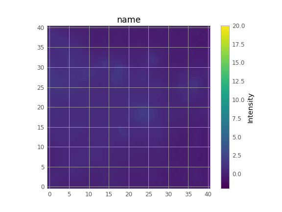

Compare the different methods
Table of Contents
Here I will compare 3 methods of filling missing data of FITS files.
- Astropy’s Convolution
- Python’s Maskfill method
- R-INLA
1. Callable function
import numpy as np threshold = np.arange(0,50,10) return threshold
import matplotlib.pyplot as plt import numpy as np from astropy.io import fits from astropy.visualization import astropy_mpl_style fig, axes = plt.subplots(3, 5, figsize=(20, 12)) # Adjust the number of subplots as needed # Iterate over different thresholds for idx, i in enumerate(threshold): filename = "{}/filled_{}.fits".format(path,i) # Load the image data img_data_filled = fits.getdata(filename) # Plot the image ax = axes[0,idx] im = ax.imshow(img_data_filled, cmap='viridis', origin='lower', vmin=-2.0, vmax=20.0) ax.set_title("Threshold {}".format(i)) plt.colorbar(im, ax=ax, orientation='vertical', label='Intensity') ######### Iterate over different thresholds for the second row of subplots filename = "galactic_center_masked_{}.fits".format(i) # Load the image data img_data_masked = fits.getdata(filename) # Plot the image on the second row ax = axes[1, idx] im = ax.imshow(img_data_masked, cmap='viridis', origin='lower', vmin=-2.0, vmax=20.0) plt.colorbar(im, ax=ax, orientation='vertical', label='Intensity') ######### Iterate over different diffs for the third row of subplots filename = "{}/diffs_{}.fits".format(path,i) # Load the original image data original = fits.getdata("galactic_center.fits") img_diffs = original - img_data_filled # Plot the image on the second row ax = axes[2, idx] im = ax.imshow(img_diffs, cmap='viridis', origin='lower', vmin=-2.0, vmax=20.0) ax.set_title("Diff = Original - Filled({})".format(i)) plt.colorbar(im, ax=ax, orientation='vertical', label='Intensity') ######### Save the Diffs hdu = fits.PrimaryHDU(img_diffs) hdu.writeto(filename,overwrite = True) # Adjust layout and display the figure fig.suptitle("{}".format(title)) plt.tight_layout() filename = "visualizations/{}".format(title) plt.savefig(filename) plt.close() print("[[./"+filename+".png]]")

2. The files
2.1. The astropy data
I will use the data from data.astropy.org. The reason for this is that we have a dense non homogeneous image and it will be good for testing
import matplotlib.pyplot as plt import numpy as np from astropy.convolution import Gaussian2DKernel, convolve from astropy.io import fits from astropy.utils.data import get_pkg_data_filename from scipy.ndimage import convolve as scipy_convolve # Load the data from data.astropy.org filename = get_pkg_data_filename('galactic_center/gc_msx_e.fits') hdul = fits.open(filename) hdul.info() data = hdul[0].data zoom = data[50:90, 60:100] * 1e5 hdul_1 = fits.PrimaryHDU(zoom) hdul_1.writeto("galactic_center.fits",overwrite = True) hdul.close()
Scale the file to have reasonable numbers (this is mostly so that colorbars do not have too many digits). Also, we crop it so you can see individual pixels
Then we can mask it by setting the brightest pixels to NaN
for i in threshold: img = zoom.copy() if i > 0: img[img > i] = np.nan hdu = fits.PrimaryHDU(img) filename = "galactic_center_masked_{}.fits".format(i) hdu.writeto(filename,overwrite = True) ig, axes = plt.subplots(1, len(threshold), figsize=(20, 4)) # Adjust the number of subplots as needed # Iterate over different thresholds for idx, i in enumerate(np.arange(0, 50, 10)): filename = "galactic_center_masked_{}.fits".format(i) # Load the image data img_data = fits.getdata(filename) # Plot the image ax = axes[idx] im = ax.imshow(img_data, cmap='viridis', origin='lower', vmin=-2.0, vmax=20.0) ax.set_title("Threshold {}".format(i)) plt.colorbar(im, ax=ax, orientation='vertical', label='Intensity') # Adjust layout and display the figure plt.tight_layout() filename = "visualizations/masked_fits" plt.savefig(filename) plt.close() filename+".png"
3. Astropy Convolution
import numpy as np import matplotlib.pyplot as plt from astropy.convolution import Gaussian2DKernel, convolve from astropy.io import fits from scipy.ndimage import convolve as scipy_convolve import os mypath = "astropy_conv" if not os.path.exists(mypath): os.mkdir(mypath)
We smooth with a Gaussian kernel with xstddev=1 (and ystddev=1). It is a 9x9 array. Astropy’s convolution replaces the NaN pixels with a kernel-weighted interpolation from their neighbors
for i in threshold: data = fits.open("galactic_center_masked_{}.fits".format(i))[0].data kernel = Gaussian2DKernel(x_stddev=1) astropy_conv = convolve(data, kernel) hdu = fits.PrimaryHDU(astropy_conv) hdu.writeto("astropy_conv/filled_{}.fits".format(i),overwrite = True)

3.1. Astropy Fast Fourier Transform (FFT).
This is much more efficient for larger kernels.
import numpy as np import matplotlib.pyplot as plt from astropy.convolution import Gaussian2DKernel, convolve_fft from astropy.io import fits from scipy.ndimage import convolve as scipy_convolve import os mypath = "astropy_fft" if not os.path.exists(mypath): os.mkdir(mypath) for i in threshold: data = fits.open("galactic_center_masked_{}.fits".format(i))[0].data kernel = Gaussian2DKernel(x_stddev=1) astropy_conv = convolve(data, kernel) hdu = fits.PrimaryHDU(astropy_conv) hdu.writeto("astropy_fft/filled_{}.fits".format(i),overwrite = True)

4. Python Maskfill
from astropy.io import fits import numpy as np from maskfill import maskfill #download from github NOT pip import matplotlib.pyplot as plt from astropy.visualization import astropy_mpl_style for i in x: hdul = fits.open("galactic_center_masked_{}.fits".format(i)) # Get the data from the FITS file data = hdul[0].data # Create a masked array from the data, masking NaN values masked_data = np.ma.masked_invalid(data) # Access the mask array mask_array = masked_data.mask maskfill.maskfill(data, mask_array,writesteps=False,output_file='maskfilled/filled_{}.fits'.format(i),verbose=True)